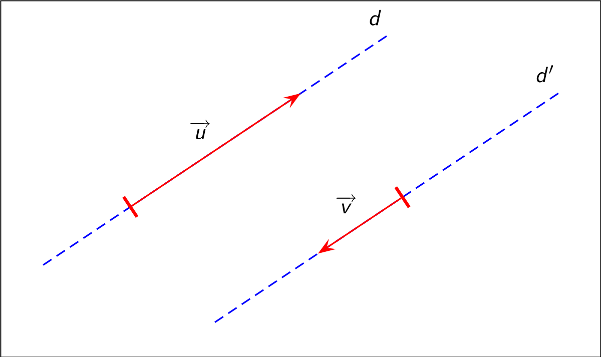
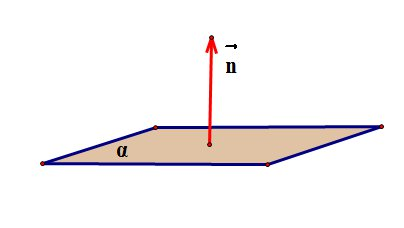

Векторы
Векторы a и b коллинеарны <=> Векторное произведение этих векторов равно нулю.

Смешанное произведение векторов a, b, c -- число (a x b, c)
Векторное произведение обладает следующими свойствами:
- a x b = b x a (антикоммутативность)
- (ka) x b = k(a x b)
- (a + b) x c = a x c + b x c (дистрибутивность)
Объем тетраэдра равно смешанному произведению векторов тетраэдра, поделенному на 6.
Плоскость
Прямоугольная система координат - пара из точки О и ортнонормированного базиса.
Уравнение поверхности S - уравнение F(x, y, z) = 0, в котором точки, лежащие на этой
поверхности, удовлетворяют ему, а точки, не лежащие на этой поверхности, не удовлетворяют ему.
Любое уравнение Ax + By + Cz + D = 0, где A^2 + B^2 + C^2 > 0, определяет плоскость.
Нормаль плоскости Ax + By + Cz + D = 0 - вектор (A, B, C), перпендиулярный плоскости.
